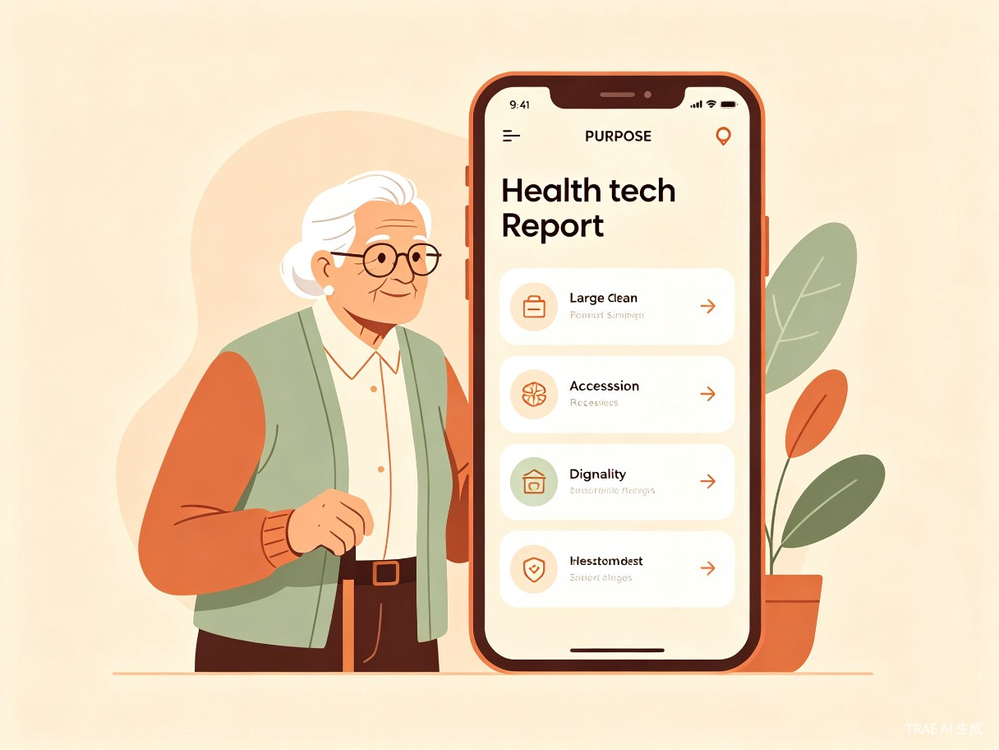
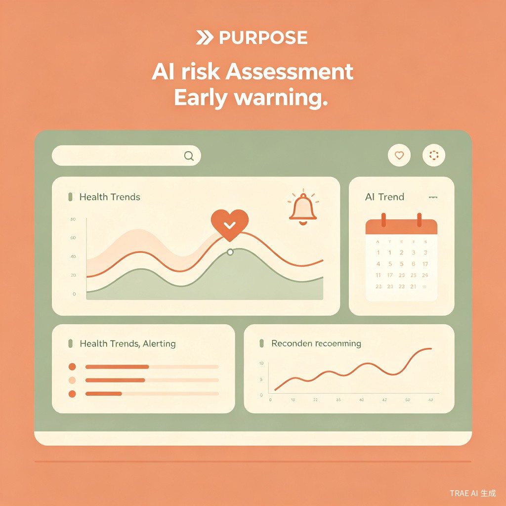

目录
项目概述：一座桥，连接健康与尊严
1.1 项目命名与品牌理念
CareBridge 这个名字来源于两个核心概念的融合：Care（照护、关怀）与 Bridge（桥梁）。它不仅仅是一个产品名称，更是一种产品哲学的表达。在这座桥上，一端是忙碌到经常忽略自己身体信号的女性，是需要被照顾但又不想被打扰的长辈，是在资源不够充分的环境里依然想认真守住健康底线的家庭；另一端，是可理解的记录、可追踪的提醒、可共享的守护机制、可导出的就医摘要，以及在真正出现风险时更及时的求助路径。
我们生活在一个技术高度发达的时代，但技术的红利并没有均匀地惠及每一个人。在繁华都市的写字楼里，年轻女性可能因为工作繁忙而连续数月忽视自己的经期异常；在偏远乡村的农舍中，年迈的父母可能因为子女外出务工而独自面对慢性病管理的困境；在医疗资源匮乏的社区，一个母亲可能因为看不懂体检报告上的专业术语而陷入无尽的焦虑。这些场景并非个例，而是全球范围内数以亿计的真实写照。
"桥的价值不在于它本身有多宏伟，而在于它让原本无法到达的两端，有了连接的可能。"
—— CareBridge 产品理念
1.2 产品定位
CareBridge 不是一款只做经期记录的小工具，也不是一个堆砌功能的健康管理应用。它是一套面向女性、家庭与银发群体的全生命周期 AI 健康共护平台。这个作品希望解决的，不只是"记一次生理期"这样单点的问题，而是当一个人面对身体不适、长期健康焦虑、家庭照护压力、信息不对称和医疗资源不足时，能不能先有一个低门槛、能坚持、有人情味的数字入口，把记录、提醒、评估、家庭协同与就医准备连接起来。
产品定位可以概括为三个关键词：
连接者
连接个人记录与家庭守护，连接日常习惯与医疗决策，连接技术能力与真实需求。
托底者
在用户最脆弱、最无助的时候，提供一个稳定、可信赖的支持系统，降低健康管理的无助感。
普惠者
设计之初就考虑低资源环境的可用性，让技术红利跨越地域、经济和文化边界。
有温度
不只是数据展示，而是用理解、尊重和陪伴的态度与用户对话，让技术有人情味。
1.3 核心设计原则
CareBridge 的设计遵循四条核心原则，这些原则贯穿产品的每一个功能、每一个交互、每一段文案：
原则一：低门槛开始
很多健康工具最大的门槛不是不会用，而是根本不想开始。CareBridge 把复杂流程拆成很小的动作，比如每天 1 分钟的补全、简单的提醒与非常清楚的下一步，让用户先迈出第一步。我们深信，一个能坚持下去的简单系统，远比一个完美但用不下去的复杂系统更有价值。
原则二：长期陪伴
健康管理不是一次性任务，而是需要持续投入的生活方式。CareBridge 通过渐进式引导、智能提醒、正向反馈和阶段性回顾，帮助用户把健康关注从"临时抱佛脚"变成"长期可持续"的日常习惯。
原则三：家庭协同
健康从来不是完全孤立的个人事务。CareBridge 特别重视家庭成员、守护人、伴侣与长辈照护关系，把"一个人扛着"变成"有人一起托底"。通过授权机制、共享视图和协同提醒，让家庭成为健康管理的共同体。
原则四：风险预警
真正好的提醒，不是信息轰炸，而是在正确的时候，用用户能理解的话告诉她现在该注意什么、要不要继续观察、需不需要联系家人或尽快就医。AI 风险评估的核心价值，在于把"后知后觉"变成"先知先觉"。
1.4 参赛赛道与契合度
CareBridge 参加的是 TRAE AI 创造力大赛的社会服务赛道，并同时契合社会公益附加赛题中的"智慧助老"方向。这一选择并非偶然，而是基于对产品本质的深刻理解：
赛道契合度分析
社会服务赛道要求"关注公共服务、社会治理与线下场景，探索技术如何让社会运行更友好、生活更便捷"。CareBridge 正是通过技术手段，将分散的个人健康记录、家庭照护责任和医疗资源连接起来，构建一个更友好的健康支持网络。
智慧助老附加赛题要求"面向银发群体在居家安全、健康、陪伴、文化生活、数字融入等方面的需求，用科技提升晚年生活品质"。CareBridge 的家庭协同模式和长辈关怀模式，直接回应了这一需求。
从评审维度来看，CareBridge 在四个评分维度上都有明确的支撑点：
| 评审维度 | CareBridge 的对应支撑 |
|---|---|
| 创意价值 | "桥"的隐喻贯穿产品始终，从功能设计到品牌表达形成统一叙事；全生命周期+家庭协同+低资源适配的组合具有独特性 |
| 技术实现 | AI 风险评估引擎、多模式切换架构、家庭协同权限系统、健康摘要生成等核心技术模块 |
| 用户体验 | 极简记录流程、渐进式引导、大字版长辈模式、语音交互支持、多语言适配 |
| 社会价值 | 关爱老人、支持女性全生命周期健康、降低医疗资源门槛、促进家庭照护协同、贫困地区可用 |
市场与需求分析：被忽视的健康照护鸿沟
2.1 全球女性健康现状
根据世界卫生组织（WHO）的数据，全球约有38亿女性，她们在不同生命阶段面临着独特的健康挑战。然而，女性健康长期以来在医学研究、公共卫生政策和数字健康产品中都处于被边缘化的位置。一个令人震惊的事实是：直到1993年，美国国立卫生研究院（NIH）才要求临床试验必须纳入女性受试者。在此之前，大量医学知识都是基于男性身体得出的，然后被"推广"到女性身上。
这种历史性的忽视在今天的数字健康领域依然有明显痕迹。市面上大多数健康应用要么过于泛化（把所有人放进同一个模板），要么过于窄化（只做经期记录或只做孕期管理）。很少有产品能够真正覆盖女性从青春期到更年期的完整生命周期，更少有产品把女性健康放在家庭和社会关系的语境中来设计。
2.2 银发群体的数字鸿沟
全球正在经历前所未有的人口老龄化。根据联合国数据，到2050年，全球60岁以上人口将达到21亿，占总人口的22%。在中国，这一趋势尤为明显——60岁以上人口已超过2.8亿，占总人口的近20%。
然而，老年人群体在数字健康领域面临着三重困境：
第一重：技术门槛
大多数健康应用的设计者都是年轻人，他们自然而然地假设用户熟悉智能手机操作、理解常见的 UI 模式、能够阅读小字号文字。但对于很多老年人来说，这些假设并不成立。复杂的注册流程、密集的界面信息、需要频繁点击的操作，都会让他们望而却步。
第二重：认知负担
随着年龄增长，人的工作记忆容量会自然下降，处理复杂信息的能力也会减弱。一个需要同时关注多个指标、理解多种图表、记住多个操作步骤的应用，对老年人来说是巨大的认知负担。更糟的是，这种负担往往被设计者忽视，因为"我们自己用起来没问题"。
第三重：情感障碍
很多老年人对新技术有一种潜在的恐惧感——害怕点错、害怕搞坏、害怕被嘲笑。这种情感障碍比技术门槛更难克服，因为它根植于自尊心和自我效能感。如果一个应用让老年人感到"自己很笨"，他们很快就会放弃。

2.3 低资源地区的健康不平等
健康不平等是一个全球性问题，但在低资源地区表现得尤为突出。根据世界银行数据，全球约有8亿人生活在极端贫困中，其中大部分集中在撒哈拉以南非洲和南亚地区。在这些地区，基本的医疗资源都严重不足，更不用说数字健康工具了。
但悖论在于：越是资源匮乏的地方，越需要一个前置的健康管理工具。在医疗资源充足的城市，一个人感到不适可以很快去看医生；但在偏远乡村，最近的诊所可能距离数十公里，看一次医生需要花费一整天的时间和不少费用。在这种情况下，一个能够帮助用户提前记录症状、评估风险、整理就医信息的工具，其价值被成倍放大。
CareBridge 在设计之初就考虑到了低资源环境的特殊需求：
- 离线可用：核心记录和提醒功能在离线状态下也能使用，数据在有网络时同步
- 低带宽：应用体积小，数据传输量低，适配慢速网络环境
- 低设备要求：适配中低端安卓设备，不依赖最新硬件
- 语音交互：支持语音记录和语音播报，降低识字门槛
- 本地语言：不仅支持主流语言，还计划覆盖地方方言和少数民族语言
2.4 家庭照护的系统性压力
现代家庭结构正在发生深刻变化。传统的多代同堂家庭模式在城镇化进程中逐渐瓦解，取而代之的是核心家庭、独居老人和空巢家庭。在中国，"421家庭结构"（四个老人、一对夫妻、一个孩子）已经成为很多中年人的现实。
这种结构变化带来了巨大的照护压力：
这些数字背后，是无数家庭的真实困境：子女在外工作，无法实时了解父母的健康状况；妻子承担了大部分家庭健康管理责任，却缺乏有效的工具和支持；慢性病患者需要长期管理，但家属往往因为信息不对称而焦虑不安。
CareBridge 的家庭协同功能，正是为了解决这些结构性问题而设计的。它不是要取代家庭关系中的情感连接，而是要为这种连接提供一个数字化的支撑框架——让关心有据可依，让照护有迹可循，让距离不再成为健康的障碍。
2.5 信息过载与理解困境
在信息时代，健康信息的获取从未如此容易，但信息的理解和应用却从未如此困难。互联网上充斥着大量的健康建议、医学科普、产品广告，但普通用户往往难以判断哪些信息可信、哪些建议适合自己。
更深层的问题是医学知识的"翻译"困境。一份体检报告上密密麻麻的指标，对医生来说是有意义的临床数据，但对普通患者来说可能只是一堆令人困惑的数字和箭头。一个 AI 系统的真正价值，不在于它能展示多少数据，而在于它能把复杂信息翻译成用户能理解的、能指导行动的语言。
CareBridge 的 AI 风险评估模块，核心设计理念就是"翻译"——把医学指标翻译成日常语言，把风险评估翻译成具体建议，把数据趋势翻译成可感知的健康故事。用户不需要先成为医学专家，才能管理自己的健康。

核心功能详解：七大模块逐一解析
3.1 模块一：轻量健康记录系统
健康记录是 CareBridge 的基础功能，但它的设计哲学与市面上大多数健康应用截然不同。我们不追求"大而全"，而是追求"小而美"——让用户用最低的成本完成最有价值的记录。
3.1.1 设计理念：从"填写表单"到"自然表达"
传统的健康记录往往采用表单式设计：打开应用，看到一长串需要填写的字段，每个字段都有精确的单位要求和格式规范。这种设计对数据收集者来说很完美，但对用户来说却是巨大的负担。
CareBridge 的记录系统采用了三种降低门槛的策略：
策略一：渐进式记录
用户第一次使用时，不需要填写所有信息。系统只询问最核心的几个问题（如当前生命阶段、最关心的健康问题），然后在使用过程中逐步引导用户补充更多信息。每一次记录都是一次小的成功，累积起来形成完整的健康档案。
策略二：多模态输入
支持文字、语音、表情符号和滑动条等多种输入方式。用户可以用语音快速描述今天的感受，可以用表情符号标记心情，可以用滑动条评估疼痛程度。不同场景下，总有一种最适合的输入方式。
策略三：智能补全
系统会根据用户的历史记录和当前上下文，智能推荐可能需要记录的项目。例如，如果用户连续三天记录了头痛，系统会主动询问"今天头痛情况如何？"，而不是让用户自己去寻找记录入口。
3.1.2 记录维度与指标体系
CareBridge 的记录维度经过精心设计，既覆盖健康管理的全面性，又避免信息过载：
| 记录维度 | 具体内容 | 输入方式 | 记录频率 |
|---|---|---|---|
| 基础体征 | 体温、体重、血压、心率 | 数字输入 / 设备同步 | 按需 / 每日 |
| 月经周期 | 经期开始/结束、流量、症状 | 日历选择 / 快捷标记 | 每月 |
| 症状追踪 | 疼痛、疲劳、头痛、消化等 | 滑动条 / 语音 / 表情 | 每日 / 按需 |
| 情绪状态 | 心情、压力、焦虑、睡眠质量 | 表情选择 / 滑动条 | 每日 |
| 生活习惯 | 饮水、运动、饮食、用药 | 快捷标记 / 数字输入 | 每日 |
| 孕产相关 | 孕周、胎动、产检记录 | 专用表单 / 拍照 | 孕期定期 |
| 长辈健康 | 用药、血压、血糖、活动 | 简化界面 / 语音 | 每日 |
3.1.3 记录体验的细节设计
在记录体验的细节上，CareBridge 做了大量的人性化设计：
一键快速记录：用户可以在通知栏或桌面小部件上直接完成常用记录，无需打开应用。例如，滑动通知栏，点击"今天经期开始"，记录就完成了。
智能时间建议：系统会学习用户的记录习惯，在合适的时间发送记录提醒。如果用户通常在早上8点记录前一天的睡眠，系统会在8点左右推送提醒，而不是在随机时间打扰。
正向反馈机制：每次完成记录，用户都会收到温和的正面反馈——可能是一句鼓励的话（"谢谢你照顾自己"），可能是一个小小的成就徽章，或者只是记录日历上又填满了一个格子。这些微小的正向反馈，是长期坚持的关键。
隐私保护设计：所有健康数据都经过端到端加密存储，用户可以设置哪些记录对家庭成员可见、哪些仅自己可见。在共享设备上使用时，可以开启"隐私模式"，隐藏敏感信息。
3.2 模块二：生命周期模式切换
CareBridge 的一个核心创新点是生命周期模式切换。我们认为，一个 15 岁的青春期少女、一个 28 岁的备孕女性、一个 45 岁的更年期女性，她们的健康需求、关注重点和使用习惯是完全不同的。把她们放在同一个界面和同一套功能里，既不公平，也不高效。
3.2.1 模式体系架构
CareBridge 设计了六个生命周期模式，每个模式都有独立的界面、功能集、提醒逻辑和 AI 评估模型：
青春期模式
面向 10-18 岁用户，关注初潮教育、经期规律建立、情绪管理和身体发育。界面活泼友好，语言亲切易懂，注重隐私保护。
经期管理模式
面向育龄女性，提供周期预测、症状追踪、排卵期估算和经期健康评估。支持 PMS/PMDD 症状管理。
备孕与孕期模式
从备孕到产后，提供排卵期追踪、孕周计算、产检提醒、胎动记录和孕期健康监测。支持高危妊娠风险评估。
产后模式
关注产后恢复、哺乳管理、新生儿健康和母亲心理健康。提供产后抑郁筛查和育儿支持资源。
更年期模式
面向 45-60 岁用户，关注更年期症状管理、骨密度监测、心血管健康和情绪支持。提供激素替代治疗信息。
长辈关怀模式
专为 60 岁以上用户设计，采用大字体、简流程、语音交互。关注慢性病管理、用药提醒、跌倒预防和紧急求助。
3.2.2 模式切换机制
模式切换可以是用户主动选择，也可以由系统智能推荐。例如，当用户连续记录经期数据并标记"正在备孕"时，系统会建议切换到备孕模式；当用户输入了预产期后，系统会自动在产后切换到产后模式。
每个模式之间的切换都是平滑的，历史数据会保留并继续用于 AI 评估。例如，一个用户从经期管理模式切换到孕期模式后，她过去一年的经期规律数据仍然会被用来评估孕早期的风险。
3.2.3 模式专属功能示例
以孕期模式为例，其专属功能包括：
- 孕周日历：可视化展示当前孕周、胎儿发育阶段和对应的身体变化
- 产检提醒：根据孕周自动推荐产检项目，提醒预约时间
- 胎动计数：简化的胎动记录工具，支持一键计数和趋势分析
- 体重管理：根据孕前 BMI 和当前孕周，提供个性化的体重增长建议
- 营养建议：基于孕期阶段和记录的饮食数据，提供营养补充建议
- 高危因素筛查：AI 评估妊娠糖尿病、妊娠高血压等风险
以长辈关怀模式为例，其专属功能包括：
- 大字体界面：所有文字和按钮都经过放大优化，适合视力下降的老年人
- 语音交互：支持语音输入记录、语音播报提醒和语音查询
- 简化流程：每个操作步骤不超过 3 次点击，减少认知负担
- 用药管理：拍照识别药品、设置用药提醒、记录服药情况
- 紧急求助：一键呼叫预设的紧急联系人，自动发送位置信息
- 家属同步：子女可以远程查看父母的健康记录和提醒执行情况
3.3 模块三：AI 风险评估与建议引擎
AI 风险评估是 CareBridge 的技术核心，也是其区别于普通健康记录工具的关键能力。但这个 AI 不是"展示自己有多聪明"，而是"帮助用户更聪明地做决定"。
3.3.1 评估引擎架构
CareBridge 的 AI 风险评估引擎采用多层级架构：
flowchart TD
A[用户输入层] --> B[数据预处理]
B --> C[特征提取]
C --> D[多模型评估]
D --> E[风险分级]
E --> F[建议生成]
F --> G[用户呈现]
D --> D1[周期异常模型]
D --> D2[症状关联模型]
D --> D3[趋势预测模型]
D --> D4[孕期风险模型]
D --> D5[慢性病模型]
G --> H[即时提醒]
G --> I[周报/月报]
G --> J[就医建议]
3.3.2 评估维度与模型
AI 引擎涵盖五大评估维度：
1. 周期异常检测
基于用户的经期记录历史，建立个性化的周期基线。当实际周期偏离基线超过一定阈值时，系统会标记为异常并提示用户关注。异常类型包括：周期过长/过短、经期过长、经量异常变化、非经期出血等。
2. 症状关联分析
通过分析多种症状的组合和时序关系，识别可能的关联模式。例如，头痛+视觉模糊+血压升高可能提示需要关注心血管健康；异常出血+腹痛+发热可能提示需要尽快就医。
3. 趋势预测
利用时间序列分析，预测关键指标的未来走势。例如，基于体重、血压和饮食记录，预测妊娠糖尿病的风险趋势；基于情绪记录和睡眠数据，预测心理健康风险。
4. 孕期风险评估
专门针对孕期的多维度风险评估，包括：妊娠高血压风险、妊娠糖尿病风险、早产风险、胎儿发育异常风险等。评估基于国际临床指南和大量医学文献。
5. 慢性病管理评估
针对高血压、糖尿病、骨质疏松等常见慢性病的管理评估，追踪关键指标的控制情况，提醒用药和复查，识别控制不佳的信号。
3.3.3 风险分级与响应策略
AI 评估结果采用四级风险分级，每级对应不同的响应策略：
| 风险等级 | 颜色标识 | 含义 | 响应策略 |
|---|---|---|---|
| 正常 | 🟢 绿色 | 指标在正常范围内，无异常信号 | 继续保持，定期记录 |
| 关注 | 🟡 黄色 | 有轻微异常，但可能为暂时波动 | 增加记录频率，观察变化趋势 |
| 预警 | 🟠 橙色 | 有明显异常，需要重视 | 建议咨询医生，通知守护人 |
| 紧急 | 🔴 红色 | 有严重异常，可能危及生命 | 强烈建议立即就医，自动通知紧急联系人 |
3.3.4 建议生成的"翻译"原则
AI 生成的建议遵循三条"翻译"原则：
原则一：从医学术语到日常语言
不说"您的收缩压持续高于140mmHg，建议进行24小时动态血压监测"，而说"您的血压最近几次都偏高，建议尽快去医院做个详细检查，医生可能会让您戴一个24小时监测的小仪器"。
原则二：从数据陈述到行动指导
不说"您的周期长度为45天"，而说"您的月经周期比平常长了，建议观察一下最近是否有压力大、作息改变或体重变化的情况。如果下个月还是这样，建议去看看妇科医生"。
原则三：从单一建议到情境化支持
不仅告诉用户"建议就医"，还提供就医前的准备清单（需要带什么资料、可能需要做哪些检查）、附近的医院信息、以及如果需要，可以通知哪位家庭成员陪同。
3.4 模块四：提醒与守护机制
提醒功能看似简单，但在 CareBridge 中，它被设计成一个多层次、可升级、有温度的守护系统。
3.4.1 提醒类型体系
CareBridge 的提醒系统包含四种类型：
日常提醒：记录提醒、用药提醒、运动提醒、饮水提醒等。这些提醒基于用户的个人习惯和设定，采用温和、不打扰的方式推送。
周期提醒：经期预测提醒、排卵期提醒、产检提醒、复查提醒等。这些提醒基于用户的生命周期数据和医学时间线。
风险提醒：当 AI 评估发现异常时触发的提醒。这类提醒的语气会根据风险等级调整——低风险用建议式语气，高风险用更直接的语气。
守护提醒：当用户未响应重要提醒时，系统会自动升级提醒，通知预设的守护人（家庭成员或紧急联系人）。
3.4.2 守护人机制
守护人机制是 CareBridge 最具创新性的功能之一。它解决了"一个人扛"的问题，把健康管理从个人行为扩展为家庭协作。
用户可以在设置中添加一位或多位守护人（如配偶、子女、父母、亲密朋友）。守护人的权限可以精细配置：
- 仅紧急通知：只在紧急情况下收到通知
- 风险摘要：定期收到健康风险摘要报告
- 完整视图：可以查看用户的完整健康记录
- 协同管理：可以帮用户记录数据、设置提醒
当系统检测到用户连续未响应重要提醒（如连续三天未记录血压、未按时服药），会自动向守护人发送通知。通知内容经过精心设计，既传达必要信息，又避免引起不必要的恐慌。
3.4.3 提醒的"温度"设计
CareBridge 的提醒文案不是模板化的机器语言，而是经过精心设计的"有温度"的表达。例如：
提醒文案对比示例
传统方式："您已3天未记录血压，请尽快记录。"
CareBridge 方式："已经3天没见到您的血压记录了，有点想念它呢。今天花30秒记录一下吧，您的健康数据正在帮您建立一个完整的健康故事。"
这种"温度"设计基于心理学中的自我决定理论（Self-Determination Theory）。该理论认为，人类有三种基本心理需求：自主性（autonomy）、胜任感（competence）和归属感（relatedness）。CareBridge 的提醒文案通过赋予用户选择权（"花30秒"而非"必须"）、肯定用户的能力（"您的健康数据正在帮您建立..."）和建立情感连接（"有点想念它呢"），来支持这三种心理需求。
3.5 模块五：家庭与长辈协同
家庭协同是 CareBridge 区别于个人健康应用的核心特征。在这个模块中，我们不仅关注"我"的健康，更关注"我们"的健康。
3.5.1 家庭空间
用户可以在 CareBridge 中创建一个"家庭空间"，邀请家庭成员加入。家庭空间是一个共享的健康信息中心，每个成员可以看到：
- 家庭成员的健康状态概览（基于用户授权的数据）
- 需要关注的提醒事项（如长辈的用药提醒、孕期的产检安排）
- 家庭健康日历（整合所有成员的重要健康事件）
- 共享的健康目标和进度（如全家一起的运动挑战）
3.5.2 长辈照护模式
长辈照护模式是家庭协同中最复杂也最重要的部分。它涉及三个关键问题：如何让长辈愿意使用？如何让子女放心？如何保护长辈的尊严和自主权？
让长辈愿意使用：
CareBridge 的长辈模式采用极简设计：大字体、大按钮、少选项、语音交互。界面没有复杂的菜单层级，核心功能都在首页。长辈不需要学习复杂的操作流程，只需要"点一下"或"说一句话"就能完成记录。
让子女放心：
子女可以在自己的 CareBridge 中绑定长辈的账号，实时查看长辈的健康记录、用药情况和提醒执行状态。如果长辈连续未响应重要提醒，子女会收到通知。在紧急情况下，子女可以一键获取长辈的位置信息（需长辈授权）。
保护长辈尊严：
这是最容易被忽视但最重要的问题。很多老年人抗拒被"监控"，因为这让他们感到自己失去了自主权。CareBridge 通过以下设计来保护长辈尊严：
- 双向授权：子女查看长辈数据需要长辈的明确授权，长辈可以随时撤销授权
- 数据透明：长辈可以看到哪些数据被共享给了谁，不会有"被监视"的感觉
- 积极框架：界面和文案强调"关心"和"陪伴"，而非"监控"和"管理"
- 自主权尊重：即使子女可以看到数据，最终的医疗决策权仍然在长辈手中
3.5.3 跨代沟通桥梁
CareBridge 还充当跨代沟通的桥梁。例如，当 AI 评估发现长辈的健康风险时，系统会生成一份"家庭沟通指南"，帮助子女用合适的方式与长辈沟通：
家庭沟通指南示例
发现的问题：妈妈最近一周的血压记录显示持续偏高。
建议的沟通方式：
1. 先关心妈妈的整体感受，不要一上来就谈数据
2. 用"我注意到"而非"你应该"的句式
3. 强调"我们一起想办法"，而非"你必须听我的"
4. 提供具体的下一步建议（如"这周我陪您去医院复查一下"）
5. 尊重妈妈的最终决定，即使她暂时不想去医院
3.6 模块六：健康摘要导出
健康摘要导出功能解决了"平时的记录如何变成关键时刻有用的信息"这一核心问题。
3.6.1 摘要类型
CareBridge 支持生成多种类型的健康摘要：
就医摘要：整合用户的症状记录、体征数据、用药历史和 AI 风险评估结果，生成一份结构化的就医摘要。这份摘要可以直接分享给医生，帮助医生快速了解患者的健康状况。
周期报告：针对经期管理用户，生成周期规律性分析、症状模式识别和生育力评估报告。
孕期档案：整合孕期所有记录，生成完整的孕期健康档案，包括产检记录、体重变化、症状追踪和 AI 风险评估历史。
家庭健康报告：为家庭空间生成综合健康报告，展示每个成员的健康状态和需要关注的事项。
3.6.2 导出格式
摘要支持多种导出格式：
- PDF 报告：格式化的文档，适合打印和存档
- 结构化数据：JSON/CSV 格式，适合导入其他医疗系统
- 分享链接：生成临时分享链接，可以安全地分享给医生或家人
- 打印版：优化排版，适合直接打印携带就医
3.6.3 数据隐私保护
所有导出的数据都经过脱敏处理，用户可以选择导出哪些数据、隐藏哪些敏感信息。分享链接设有有效期和访问密码，过期后自动失效。
3.7 模块七：全球与多地区适配
CareBridge 从设计之初就考虑全球适配，这不仅是语言翻译的问题，更是对文化差异、医疗体系差异和基础设施差异的深刻理解。
3.7.1 语言与文化适配
CareBridge 支持多语言界面，但语言适配远不止翻译界面文字。它还包括：
- 文化敏感的内容：不同文化对月经、更年期、性健康等话题的态度不同，内容表达需要相应调整
- 本地化医学知识：不同地区的常见疾病、医疗实践和健康建议可能不同
- 地方方言支持：在语音识别中支持地方方言，降低使用门槛
- RTL 语言支持：支持阿拉伯语、希伯来语等从右到左书写的语言
3.7.2 医疗体系适配
不同国家和地区的医疗体系差异巨大：
| 适配维度 | 具体措施 |
|---|---|
| 单位系统 | 支持公制/英制切换（体重kg/lb、体温°C/°F、血压mmHg等） |
| 药品数据库 | 对接各国药品数据库，支持通用名和商品名识别 |
| 急救信息 | 根据用户位置自动显示当地急救电话和最近医院 |
| 法定要求 | 遵守各地数据保护法规（GDPR、个人信息保护法等） |
| 医疗指南 | AI 评估模型基于当地临床指南进行校准 |
3.7.3 低资源环境优化
对于网络条件差、设备性能低的地区，CareBridge 提供 Lite 版本：
- 应用体积：核心功能包小于 10MB
- 离线优先：所有核心功能离线可用，数据按需同步
- 低带宽同步：智能压缩数据，仅在 WiFi 环境下同步大文件
- 省电模式：减少后台活动，延长设备续航
- SMS 备用：在无法使用数据网络时，支持通过 SMS 接收关键提醒
技术实现与AI能力
4.1 系统架构
CareBridge 采用现代化的云原生架构，确保高可用性、可扩展性和安全性：
flowchart TB
subgraph 客户端层
A1[移动端 App]
A2[Web 端]
A3[桌面小部件]
end
subgraph 接入层
B1[API Gateway]
B2[负载均衡]
B3[CDN]
end
subgraph 服务层
C1[用户服务]
C2[记录服务]
C3[AI 评估服务]
C4[提醒服务]
C5[家庭协同服务]
C6[导出服务]
end
subgraph 数据层
D1[用户数据库]
D2[记录数据库]
D3[AI 模型仓库]
D4[缓存层]
end
subgraph AI层
E1[风险评估模型]
E2[自然语言处理]
E3[时序预测模型]
E4[推荐系统]
end
A1 --> B1
A2 --> B1
A3 --> B1
B1 --> C1
B1 --> C2
B1 --> C3
B1 --> C4
B1 --> C5
B1 --> C6
C1 --> D1
C2 --> D2
C3 --> E1
C3 --> E2
C3 --> E3
C4 --> E4
C5 --> D1
C6 --> D2
4.2 AI 模型详解
4.2.1 风险评估模型
风险评估模型是 CareBridge AI 引擎的核心。它采用多模型融合架构，结合规则引擎和机器学习模型：
规则引擎层：基于医学临床指南和专家知识，建立一系列确定性规则。例如，收缩压持续 >= 140mmHg 标记为高血压风险。这一层确保评估结果的医学准确性和可解释性。
机器学习层：使用梯度提升树（XGBoost/LightGBM）和深度神经网络，学习用户数据中的复杂模式。这一层能够发现规则引擎难以捕捉的隐性关联。
融合层：将规则引擎和机器学习的结果进行加权融合，生成最终的风险评分。融合权重根据具体场景动态调整——在需要高确定性的场景（如紧急风险识别）中，规则引擎权重更高；在需要个性化洞察的场景（如趋势预测）中，机器学习权重更高。
4.2.2 自然语言处理
NLP 能力贯穿 CareBridge 的多个功能：
- 症状理解：将用户的自然语言描述（如"今天头有点晕，还有点恶心"）结构化，提取症状实体和严重程度
- 建议生成：将医学评估结果转化为用户友好的自然语言建议
- 语音交互：支持语音输入记录和语音播报提醒
- 药品识别：通过 OCR 识别药品包装上的文字信息
4.2.3 时序预测模型
时序预测模型用于预测用户的健康趋势，包括：
- 周期预测：基于历史周期数据，预测下一次月经的开始时间
- 症状预测：基于历史症状模式，预测可能出现的症状
- 指标趋势：基于历史体征数据，预测关键指标的未来走势
模型采用 Transformer 架构的时序变体，能够捕捉长期依赖关系和季节性模式。
4.3 数据安全与隐私
健康数据是最敏感的个人数据之一。CareBridge 采用多层安全策略：
- 端到端加密：用户数据在设备端加密后传输和存储，即使服务器被攻破，攻击者也无法读取原始数据
- 零知识架构：服务器只存储加密后的数据，无法访问用户的明文健康信息
- 本地优先：核心数据优先存储在本地，仅在用户明确授权时同步到云端
- 合规认证：遵守 GDPR、HIPAA、个人信息保护法等全球主要数据保护法规
- 审计日志：所有数据访问操作都有完整审计日志，用户可以随时查看谁访问了自己的数据
4.4 TRAE 开发实践
CareBridge 的开发全程使用 TRAE IDE 和 TRAE Work 完成。以下是关键开发环节：
TRAE 开发关键步骤
步骤一：创意构思与架构设计
使用 TRAE Work 的 Auto 模式，将产品创意和需求描述输入，AI 自动生成系统架构方案和技术选型建议。通过多轮对话，逐步细化功能模块和数据模型设计。
步骤二：前端界面开发
使用 TRAE IDE 的 Builder 模式，通过自然语言描述界面需求，AI 自动生成 React 组件代码。针对长辈模式的大字体界面，通过 AI 辅助完成了响应式设计和无障碍优化。
步骤三：AI 模型集成
使用 TRAE Work 的 Agent 模式，让 AI 协助完成风险评估模型的训练数据准备、特征工程和模型调优。AI 还帮助生成了模型解释性报告，确保评估结果的可解释性。
步骤四：测试与优化
使用 TRAE IDE 的调试功能，快速定位和修复代码问题。AI 辅助生成了单元测试用例和集成测试脚本，覆盖了核心功能路径。
用户体验设计：低门槛与有温度
5.1 设计哲学
CareBridge 的用户体验设计基于一个核心信念：技术应该适应人，而不是让人适应技术。这一信念体现在三个设计维度上：
认知维度：降低理解成本
每个界面、每段文案、每个交互都经过精心设计，确保用户不需要先学习就能理解。我们遵循"一目了然"原则——用户看到界面的第一眼，就应该知道这是什么、能做什么、下一步该做什么。
情感维度：建立信任与陪伴
健康是一个高度情感化的话题。用户在使用健康应用时，往往伴随着焦虑、担忧、羞耻或无助。CareBridge 的设计通过温暖的色调、鼓励性的文案、非评判性的态度，来建立用户的信任感和安全感。
行为维度：支持长期习惯
健康管理的最大挑战不是开始，而是坚持。CareBridge 通过微习惯设计、正向反馈、社交支持和灵活调整，帮助用户把健康记录从"任务"变成"习惯"。
5.2 视觉设计系统
5.2.1 色彩体系
CareBridge 的色彩体系以温暖、自然、安心为核心：
- 主色（暖赭石 #C4703E）：代表温暖、关怀和活力。用于主要按钮、重点标记和品牌标识。
- 辅色（鼠尾草绿 #6B8E6B）：代表健康、自然和安心。用于成功状态、健康指标和正面反馈。
- 背景色（暖米白 #FDF8F3）：温暖而不刺眼，营造舒适的阅读环境。
- 文字色（深棕 #2D2420）：比纯黑更柔和，减少视觉疲劳。
5.2.2 字体与排版
采用无衬线字体作为正文字体，确保在小屏幕上的可读性；标题使用衬线字体，增加人文气息。长辈模式的字体大小比普通模式大 40%，行高增加 20%，确保老年人也能舒适阅读。
5.2.3 图标与插画
所有图标采用圆润、简洁的线条风格，避免尖锐的棱角。插画风格温暖、包容，展现多元化的用户形象——不同年龄、不同肤色、不同体型的用户都能在界面中看到自己的影子。
5.3 交互设计原则
5.3.1 三步原则
任何核心操作都应该在三步之内完成。例如，记录一次经期：打开应用（1）→ 点击"经期开始"（2）→ 确认（3）。这种极简流程大大降低了用户的操作负担。
5.3.2 容错设计
用户不可避免地会犯错——点错按钮、输入错误数据、忘记操作。CareBridge 的容错设计包括：
- 撤销功能：所有记录操作都支持撤销
- 确认提示：重要操作（如删除数据、取消提醒）需要二次确认
- 智能纠错：当检测到明显异常的数据输入时，系统会友好地提示用户确认
- 恢复机制：误删的数据可以在回收站中恢复
5.3.3 渐进式引导
新用户不会一次性看到所有功能。CareBridge 采用渐进式引导策略：
- 第一天：只展示核心记录功能，让用户完成第一次记录
- 第一周：逐步引入提醒功能和周期预测
- 第一个月：根据用户的使用情况，推荐合适的附加功能
- 持续：定期向用户介绍新功能，但从不强制
5.4 无障碍设计
CareBridge 的无障碍设计不仅是为了满足法规要求，更是产品理念的体现——一个真正普惠的健康工具，必须让所有人都能使用。
| 无障碍维度 | 具体措施 |
|---|---|
| 视觉障碍 | 支持屏幕阅读器、高对比度模式、字体大小调节、语音播报 |
| 听觉障碍 | 所有音频内容都有文字替代，震动提醒替代声音提醒 |
| 运动障碍 | 支持语音输入、大点击区域、减少精细操作需求 |
| 认知障碍 | 简化界面、清晰的操作提示、一致的交互模式 |
| 识字障碍 | 语音交互、图标化界面、简化文字表达 |
社会价值与公益延展
6.1 直接社会价值
CareBridge 的社会价值可以从三个层面来理解：
6.1.1 个体层面：赋能用户管理自身健康
对于个体用户，CareBridge 的价值在于：
- 降低健康焦虑：通过清晰的风险评估和明确的行动建议，把"不知道该怎么办"的焦虑转化为"知道下一步做什么"的掌控感
- 促进早期干预：通过日常记录和 AI 预警，帮助用户在疾病早期就发现问题，提高治疗效果
- 增强健康素养：通过"翻译"医学知识，帮助用户逐步理解自己的健康状况
- 支持自主决策：提供充分信息，让用户能够参与自己的健康决策，而非被动接受
6.1.2 家庭层面：强化家庭照护能力
对于家庭，CareBridge 的价值在于：
- 减轻照护负担：通过系统化的记录和提醒，减少照护者的记忆负担和焦虑
- 促进代际沟通：通过共享健康信息，让家庭成员之间的关心有据可依
- 支持远程照护：让异地子女也能参与父母的健康管理
- 预防照护者 burnout：通过分担责任和提供支持，降低家庭照护者的心理压力
6.1.3 社会层面：促进健康公平
对于社会，CareBridge 的价值在于：
- 降低医疗门槛：让资源不足地区的用户也能获得基础的健康管理工具
- 减少医疗浪费：通过早期预警和就医准备，减少不必要的急诊和重复检查
- 支持公共卫生：在匿名化和脱敏的前提下，为公共卫生研究提供数据支持
- 促进健康平等：特别关注女性健康和老年健康这两个长期被忽视的群体
6.2 公益延展计划
CareBridge 的公益延展不仅停留在产品功能层面，还包括一系列社会行动：
6.2.1 社区健康大使计划
在偏远地区和低资源社区，招募和培训"社区健康大使"。这些大使通常是当地的社区工作者、志愿者或受过基础培训的居民，他们帮助社区成员安装和使用 CareBridge，解答使用问题，收集反馈。
6.2.2 医疗机构合作
与基层医疗机构合作，将 CareBridge 作为患者管理的辅助工具。医生可以通过 CareBridge 查看患者的日常记录，患者可以通过 CareBridge 接收医生的随访提醒。
6.2.3 公益版本
为低收入用户、残障用户和老年人提供完全免费的公益版本，包含所有核心功能。公益版本通过企业赞助、政府补贴和社会捐赠来维持运营。
6.2.4 健康教育资源
在应用内提供多语言、多形式的健康教育资源，包括图文科普、视频教程和语音讲解。这些资源特别关注女性健康、老年健康和慢性病管理。
6.3 联合国可持续发展目标对齐
CareBridge 的设计目标与联合国可持续发展目标（SDGs）高度对齐：
| SDG 目标 | CareBridge 的贡献 |
|---|---|
| SDG 3: 良好健康与福祉 | 直接贡献——通过数字化工具提升个人和家庭的健康管理能力 |
| SDG 5: 性别平等 | 关注女性全生命周期健康，支持女性获得健康信息和自主权 |
| SDG 10: 减少不平等 | 低资源环境适配，让技术红利惠及边缘化群体 |
| SDG 17: 伙伴关系 | 与医疗机构、社区组织和政府部门合作，构建健康支持网络 |
全球适配与低资源环境策略
7.1 全球适配框架
CareBridge 的全球适配不是简单的"翻译+本地化"，而是一个系统性的框架，涵盖技术、内容、文化和运营四个层面。
7.1.1 技术层面
- 多语言架构：采用 i18n 国际化框架，支持 50+ 语言的动态切换
- RTL 支持：完整支持阿拉伯语、希伯来语、波斯语等 RTL 语言
- 多时区处理：所有时间相关功能都基于用户本地时区
- 多币种/单位：支持全球主要货币和度量单位系统
7.1.2 内容层面
- 本地化医学内容：与各地医学专家合作，确保健康建议符合当地医疗实践
- 文化适应性：调整内容表达方式，尊重当地文化习俗和禁忌
- 法规合规：遵守各地医疗器械法规、数据保护法规和广告法规
7.1.3 文化层面
- 文化敏感性审查：所有内容在发布前都经过目标文化背景专家的审查
- 本地化用户研究：在不同地区开展用户研究，了解当地用户的特殊需求
- 多元化团队：组建多元化的产品团队，确保不同文化背景的声音都被听到
7.2 低资源环境策略
低资源环境是 CareBridge 特别关注的场景。这里的"低资源"不仅指经济资源，还包括网络资源、设备资源、教育资源和医疗资源。
7.2.1 网络资源优化
离线优先架构：CareBridge 的核心功能（记录、查看、提醒）完全离线可用。数据在有网络时自动同步，无网络时本地存储。
智能同步策略：
- 仅在 WiFi 环境下同步大文件（如图片、语音）
- 数据压缩传输，减少流量消耗
- 增量同步，只传输变化的数据
- 后台智能调度，避开网络高峰时段
SMS 备用通道：在完全没有数据网络的情况下，关键提醒可以通过 SMS 发送。用户也可以通过 SMS 回复完成简单的记录操作。
7.2.2 设备资源优化
Lite 版本：为低端设备提供 Lite 版本，应用体积小于 10MB，内存占用低于 50MB。
性能优化：
- 减少动画和过渡效果，提升响应速度
- 延迟加载非核心资源
- 优化图片压缩和缓存策略
- 减少后台进程，延长电池续航
7.2.3 教育资源优化
语音优先交互：对于识字率低的地区，提供语音输入和语音播报功能。用户可以通过说话完成记录，通过听声音接收提醒。
视觉化界面：大量使用图标、颜色和图形来传达信息，减少对文字的依赖。
社区培训：与本地社区组织合作，开展面对面的使用培训，帮助用户克服技术门槛。
7.2.4 医疗资源桥接
在医疗资源匮乏的地区，CareBridge 不仅是一个记录工具，更是一个医疗资源桥接器：
- 就医准备：帮助用户整理症状记录和病史，提高就医效率
- 远程咨询：在支持的地区，对接远程医疗平台，让用户可以先进行线上咨询
- 健康教育：提供基础的健康知识，帮助用户识别需要就医的情况
- 转诊指导：根据症状和地理位置，指导用户应该去哪种医疗机构
心理学视角：评委共情与用户信任
8.1 评委视角：如何建立共情
在 TRAE AI 创造力大赛的评审中，评委需要在短时间内理解一个作品的价值。要让评委产生共情，需要从心理学的角度精心设计叙事。
8.1.1 共情的三个层次
心理学研究表明，共情（empathy）包含三个层次：
认知共情（Cognitive Empathy）：理解他人的处境和感受。要让评委认知共情，需要清晰地描述目标用户的真实困境——不是泛泛而谈"很多人有健康问题"，而是具体到"一个在外打工的女儿，每周日晚上都会焦虑地想：妈妈这周的药按时吃了吗？血压还稳定吗？"
情感共情（Affective Empathy）：感受他人的情绪。要让评委情感共情，需要在叙事中融入真实的情感元素——焦虑、无助、愧疚、希望。例如，描述一位更年期女性面对身体变化时的困惑和孤独，或一位新手妈妈在产后抑郁边缘挣扎时的脆弱。
行动共情（Compassionate Empathy）：想要帮助他人。要让评委产生行动共情，需要展示这个作品如何切实地改善用户的处境——不是"我们有 AI 技术"，而是"当 AI 发现妈妈的血压连续偏高时，它会温柔地提醒她，同时通知女儿，并提供一份'如何与长辈沟通健康问题'的指南"。
8.1.2 叙事策略
基于共情的三个层次，CareBridge 的参赛叙事采用了以下策略：
策略一：用户故事驱动
不是从功能列表开始，而是从用户故事开始。每个核心功能都对应一个真实的用户故事，让评委能够"代入"用户的处境。
用户故事示例：小雯的经期焦虑
小雯今年28岁，在一家互联网公司做产品经理。工作压力大，经常加班到深夜。她的月经周期一直不太规律，有时候35天，有时候50天。她下载过很多经期 App，但总是用几次就放弃了——因为记录太麻烦，而且 App 只会告诉她"周期不规律"，却不告诉她这意味着什么、该怎么办。
小雯最焦虑的不是"周期不规律"这个事实本身，而是"我不知道这算不算问题"。她想过去医院，但一想到要请假、排队、做检查，就拖延了。她也在网上查过很多资料，但越看越害怕——有人说可能是多囊卵巢综合征，有人说可能是甲状腺问题，有人说只是压力大。
CareBridge 如何帮助小雯：
1. 极简记录：每天只需30秒，记录当天的症状和感受
2. AI 评估：基于小雯的记录，AI 识别出她的周期模式，并给出个性化的风险评估
3. 温度建议：不是冷冰冰的"建议就医"，而是"您的周期波动在可接受范围内，但建议关注压力管理。如果连续三个月超过60天，建议去看看妇科医生。需要我帮您整理一份就医准备清单吗？"
4. 行动支持：提供就医准备清单、附近的医院信息、以及"如何与医生沟通"的指南
策略二：痛点-方案-价值的清晰链条
每个功能都遵循"痛点-方案-价值"的叙事结构，让评委清楚地理解"为什么做"和"做成了什么"。
策略三：数据与故事结合
用数据建立可信度，用故事建立情感连接。例如，"全球有3.2亿育龄女性面临经期健康问题"（数据）+ "小雯的故事"（故事）= 评委既理解了问题的规模，又感受到了问题的真实。
8.1.3 评委心理画像
理解评委的心理状态，有助于更好地设计叙事。TRAE AI 创造力大赛的评委可能具有以下特征：
- 技术背景：评委可能是技术专家，对 AI 能力有深入了解，因此需要展示技术的创新性和实现难度
- 产品经验：评委可能有产品背景，关注用户体验和商业可行性
- 社会关怀：作为社会服务赛道的评委，特别关注作品的社会价值和公益属性
- 时间有限：评委需要在有限时间内评审大量作品，因此叙事需要简洁有力、重点突出
- 寻求惊喜：评委希望看到令人眼前一亮的创意，而非千篇一律的方案
基于这些特征，CareBridge 的叙事策略是：用技术创新支撑社会价值，用用户故事传递情感温度，用清晰结构降低理解成本。
8.2 用户视角：如何建立信任
信任是健康应用成功的基石。用户需要相信这个应用是可靠的、安全的、真正关心他们的。从心理学角度，信任的建立需要满足几个条件：
8.2.1 能力信任（Competence Trust）
用户需要相信这个应用"有能力"帮助他们。CareBridge 通过以下方式建立能力信任：
- 透明性：清楚地告诉用户 AI 评估的依据是什么，不是黑箱操作
- 准确性：通过持续的模型优化和用户反馈，提高评估的准确性
- 专业性：与医学专家合作，确保健康建议的科学性
- 一致性：评估结果和建议在逻辑上保持一致，不会出现自相矛盾
8.2.2 善意信任（Benevolence Trust）
用户需要相信这个应用"真心"为他们好。CareBridge 通过以下方式建立善意信任：
- 非评判态度：无论用户的健康数据如何，界面和文案都保持尊重和支持，从不批评或羞辱
- 用户利益优先：在商业模式设计上，用户的健康利益始终优先于商业利益
- 隐私保护：通过严格的数据保护措施，让用户感到自己的信息是安全的
- 公益承诺：为低收入用户提供免费版本，展示企业的社会责任感
8.2.3 诚信信任（Integrity Trust）
用户需要相信这个应用"说到做到"。CareBridge 通过以下方式建立诚信信任：
- 承诺兑现：承诺的功能都能实现，承诺的数据保护都能做到
- 透明沟通：当出现问题时，及时、诚实地与用户沟通
- 用户控制：用户对自己的数据有完全的控制权，可以随时查看、导出或删除
- 无暗箱操作：不偷偷收集数据，不把用户数据用于未授权的目的
8.3 行为设计：如何促进长期使用
健康应用最大的挑战是用户留存。根据行业数据，健康类应用的30日留存率通常低于10%。CareBridge 通过行为设计心理学来提高用户粘性：
8.3.1 习惯回路设计
根据查尔斯·杜希格（Charles Duhigg）的习惯回路理论，习惯由三个部分组成：提示（Cue）→ 行为（Routine）→ 奖励（Reward）。CareBridge 的设计有意识地构建这个回路：
- 提示：智能提醒在合适的时间出现，成为用户开始记录的触发器
- 行为：极简的记录流程，让行为本身几乎没有阻力
- 奖励：完成记录后的正向反馈（鼓励话语、成就徽章、数据可视化），让大脑产生愉悦感
8.3.2 损失厌恶利用
行为经济学中的"损失厌恶"（Loss Aversion）理论指出，人们对损失的敏感度高于对同等收益的敏感度。CareBridge 巧妙地利用这一心理：
- 连续记录 streak：显示用户已经连续记录了多少天，中断会产生"损失感"
- 数据完整性：展示健康档案的"完整度"，鼓励用户补充缺失的数据
- 目标进度：设定健康目标并展示进度，未完成的目标会产生心理驱动力
8.3.3 社会认同效应
社会认同（Social Proof）是指人们倾向于参考他人的行为来指导自己的行为。CareBridge 在适当场景下利用社会认同：
- 家庭排行榜：家庭成员之间可以查看彼此的健康活动完成情况（在授权前提下）
- 社区分享：用户可以选择匿名分享自己的健康改善故事，激励他人
- 专家背书：展示医学专家对 CareBridge 的认可和推荐
8.3.4 自主性支持
自我决定理论强调，自主性（Autonomy）是人类的基本心理需求之一。CareBridge 通过以下设计支持用户的自主性：
- 选择权：用户可以自定义提醒时间、记录项目和界面主题
- 退出自由：用户可以随时暂停或关闭任何功能，不会受到惩罚
- 个性化：AI 建议不是命令，而是"参考选项"，最终决策权在用户
- 渐进控制：随着用户使用经验的增加，逐步开放更多高级功能，让用户感到自己在"成长"
竞品分析与差异化定位
9.1 市场格局
数字健康市场已经相当拥挤，但 CareBridge 通过差异化定位找到了独特的价值空间。
9.1.1 主要竞品类型
| 竞品类型 | 代表产品 | 优势 | 劣势 |
|---|---|---|---|
| 经期追踪 App | Clue, Flo, 美柚 | 功能成熟，用户基数大 | 功能单一，缺乏全生命周期覆盖 |
| 孕期管理 App | BabyCenter, 宝宝树 | 内容丰富，社区活跃 | 仅覆盖孕期，产后即流失 |
| 综合健康平台 | Apple Health, Google Fit | 生态整合，数据全面 | 缺乏针对性，女性和老年功能薄弱 |
| 慢病管理 App | 糖护士, 血压管家 | 专业性强，医疗对接 | 仅针对单一疾病，缺乏家庭协同 |
| 老年关怀 App | 各类养老平台 | 功能针对性强 | 用户体验差，缺乏 AI 能力 |
9.2 CareBridge 的差异化优势
CareBridge 的差异化可以概括为"三个唯一"：
9.2.1 唯一覆盖女性全生命周期的平台
从青春期到更年期，CareBridge 提供连续的健康支持。用户不需要在生命阶段转换时更换应用，数据可以无缝迁移，历史记录持续用于 AI 评估。这种连续性不仅提升了用户体验，也积累了更丰富的数据用于个性化评估。
9.2.2 唯一以家庭协同为核心的健康应用
大多数健康应用都是"个人工具"，但 CareBridge 把家庭作为基本单位。通过守护人机制、家庭空间和跨代沟通支持，CareBridge 让健康管理从"一个人的战斗"变成"一家人的守护"。
9.2.3 唯一从设计之初就考虑低资源环境的健康应用
低资源环境适配不是后期添加的功能，而是 CareBridge 的设计基因。从离线优先架构到 Lite 版本，从语音交互到 SMS 备用通道，每一个设计决策都考虑了资源受限场景的需求。
9.3 竞争壁垒
CareBridge 的竞争壁垒来自四个方面：
- 数据壁垒：随着用户使用时间的增长，积累的个性化数据越来越有价值，迁移成本越来越高
- 算法壁垒：基于大量真实用户数据训练的 AI 模型，具有难以复制的准确性
- 网络效应：家庭协同功能产生网络效应——一个家庭成员使用，会带动其他家庭成员使用
- 品牌壁垒：在"有温度的健康科技"这一心智定位上建立品牌认知
商业模式与可持续发展
10.1 价值主张
CareBridge 的商业价值建立在明确的价值主张之上：为女性、家庭和老年人提供可负担、可持续、有温度的 AI 健康共护服务。
10.2 收入模式
CareBridge 采用"免费+增值"（Freemium）模式，确保核心功能对所有用户免费，同时通过增值服务获得收入：
| 层级 | 功能 | 定价策略 |
|---|---|---|
| 免费版 | 基础记录、周期预测、基础提醒、家庭协同（2人） | 完全免费 |
| 专业版 | AI 风险评估、高级提醒、家庭协同（无限）、健康摘要导出、多设备同步 | 订阅制，月费/年费 |
| 公益版 | 与专业版同等功能 | 对低收入用户、残障用户、老年人免费，由企业赞助和社会捐赠支持 |
10.3 成本结构
CareBridge 的主要成本包括：
- 技术研发：AI 模型训练、应用开发、系统维护
- 医学内容：与医学专家合作，确保内容的准确性和时效性
- 运营支持：用户支持、社区运营、健康大使培训
- 基础设施：云服务、数据存储、带宽
10.4 可持续发展策略
CareBridge 的可持续发展不仅指商业上的可持续，更指社会价值的可持续：
- 技术可持续：采用开源技术栈，降低技术依赖风险；建立技术文档和知识库，确保团队变动不影响产品延续
- 商业可持续：通过多元化收入（订阅、B2B合作、政府项目）降低单一收入来源的风险
- 社会可持续：通过公益版本和社区合作，确保产品能够持续服务弱势群体
- 环境可持续：优化应用性能，减少设备能耗；采用绿色云服务，降低碳足迹
未来路线图
11.1 短期目标（0-6个月）
- 完善核心功能，提升 AI 评估准确性
- 优化长辈模式的用户体验，开展老年用户测试
- 扩展语言支持，覆盖主要市场语言
- 建立与基层医疗机构的合作试点
- 启动社区健康大使计划
11.2 中期目标（6-18个月）
- 推出 Lite 版本，进入低资源市场
- 深化 AI 能力，引入更多健康评估维度
- 扩展家庭协同功能，支持更复杂的家庭结构
- 建立健康教育资源库，覆盖更多健康话题
- 开展学术研究，验证产品的健康改善效果
11.3 长期愿景（18个月-3年）
- 成为全球领先的 AI 健康共护平台
- 建立全球健康数据网络，支持公共卫生研究
- 推动健康科技领域的包容性和可及性标准
- 探索与可穿戴设备、智能家居的深度融合
- 建立可持续的公益运营模式，服务1亿+用户
参赛总结与创作者成长
12.1 创作历程
CareBridge 的创作历程，是一个从"想做很厉害的工具"到"想做真正能托住人的产品"的转变过程。
最初，我被 AI 技术的能力所吸引，想要做一个"功能强大"的健康应用。但随着深入思考和用户调研，我逐渐意识到：技术的价值不在于它有多先进，而在于它能为真实的人解决多少真实的问题。
这个转变过程中有几个关键的顿悟时刻：
顿悟一：从"功能堆砌"到"用户旅程"
最初的功能列表很长，涵盖了几乎所有能想到的健康管理功能。但在梳理用户旅程时，我发现很多功能虽然"有用"，但并不"必要"。一个用户从打开应用到获得价值，中间的路径越短越好。最终，我把功能精简到七个核心模块，每个模块都直接对应一个用户痛点。
顿悟二：从"个人工具"到"家庭生态"
最初的设计完全围绕个人用户。但在访谈中，我反复听到同一个主题："我不是不想管自己的健康，但我更担心我父母的健康。"这让我意识到，健康管理在中国文化语境中，从来都不是纯粹的个人行为。家庭协同功能的加入，让产品从一个工具变成了一个生态。
顿悟三：从"技术展示"到"温度传递"
最初的 AI 评估模块设计得很"专业"——大量的数据图表、复杂的指标解释、详尽的医学建议。但在用户测试中，我发现用户并不想要"专业"，他们想要"安心"。一个简洁的"目前一切正常，继续保持"，比一页复杂的分析更有价值。这让我重新思考 AI 的定位：不是替代医生，而是陪伴用户。
12.2 技术成长
在 TRAE 的帮助下，我完成了从技术新手到能够独立开发完整应用的跨越。TRAE IDE 的 AI 辅助编程功能让我能够快速学习和实践：
- 前端开发：从 HTML/CSS 基础到 React 组件化开发，TRAE 的实时代码建议让我少走了许多弯路
- 后端架构：TRAE 帮助我理解了 RESTful API 设计、数据库建模和云服务部署
- AI 集成：TRAE 的 Agent 模式协助我完成了 AI 模型的选型、训练和集成
- 用户体验：TRAE 帮我生成了大量 UI 组件和交互原型，加速了设计迭代
更重要的是，TRAE 让我学会了如何与 AI 协作。不是把 AI 当作替代工具，而是把 AI 当作协作伙伴——我负责定义问题和判断价值，AI 负责加速实现和提供选项。
12.3 对评委的寄语
尊敬的评委老师：
如果您读到了这里，我想感谢您花时间来了解 CareBridge。在这个技术飞速发展的时代，每天都有无数的新应用诞生，每一个都声称能改变世界。我知道，要在众多作品中脱颖而出，需要的不仅是好的想法，还需要真实的需求、扎实的实现和真诚的态度。
CareBridge 可能不是技术最复杂的作品，也可能不是界面最华丽的作品。但我希望它是一个最有温度的作品——一个真正关心用户、尊重用户、愿意为用户长期陪伴的作品。
我想请您想象几个场景：
一个在外打工的女儿，每周日晚上打开 CareBridge，看到妈妈的血压记录一切正常，心里的石头落了地。
一位更年期女性，在 CareBridge 上记录了自己的症状，AI 温柔地告诉她"这些变化是正常的，您不是一个人"，她感到被理解了。
一个偏远乡村的老人，用语音在 CareBridge 上记录了自己的用药情况，远在城市的儿子收到了确认通知，知道爸爸今天按时吃药了。
这些场景不是什么宏大的叙事，但它们真实、具体、温暖。如果 CareBridge 能让这些场景多发生一次，那它就有了存在的意义。
最后，我想用 CareBridge 的命名理念来结束这份报告：
"桥的价值不在于它本身有多宏伟，而在于它让原本无法到达的两端，有了连接的可能。"
CareBridge 希望成为这样一座桥——连接记录与理解，连接个人与家庭，连接今天的小动作与未来的大风险，连接普通用户与更有尊严的健康支持。
如果一个人很忙、很累、很害怕、很难开口，甚至身边没有足够资源，那么她至少还能先从一个小小的入口开始，让自己的健康被认真对待。
我希望这就是 CareBridge 的意义。
—— CareBridge 创作者
2026年6月